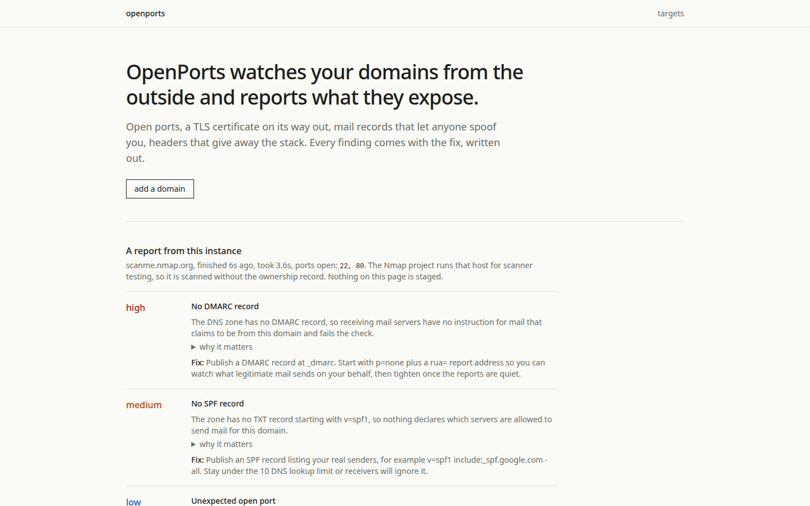
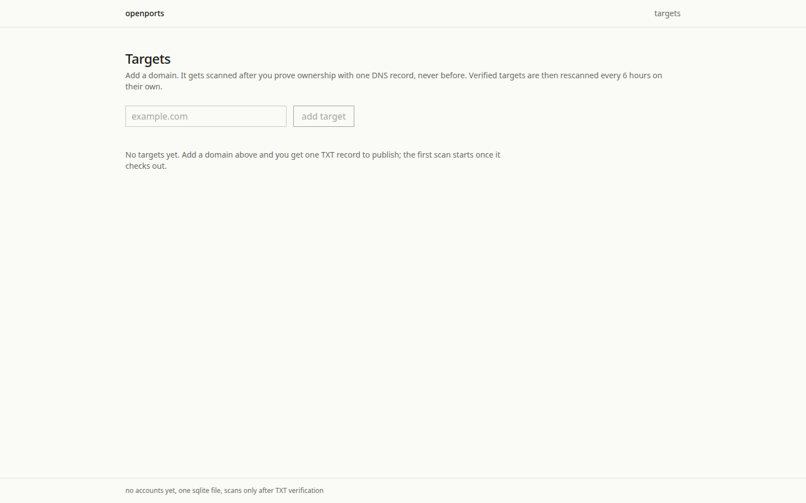
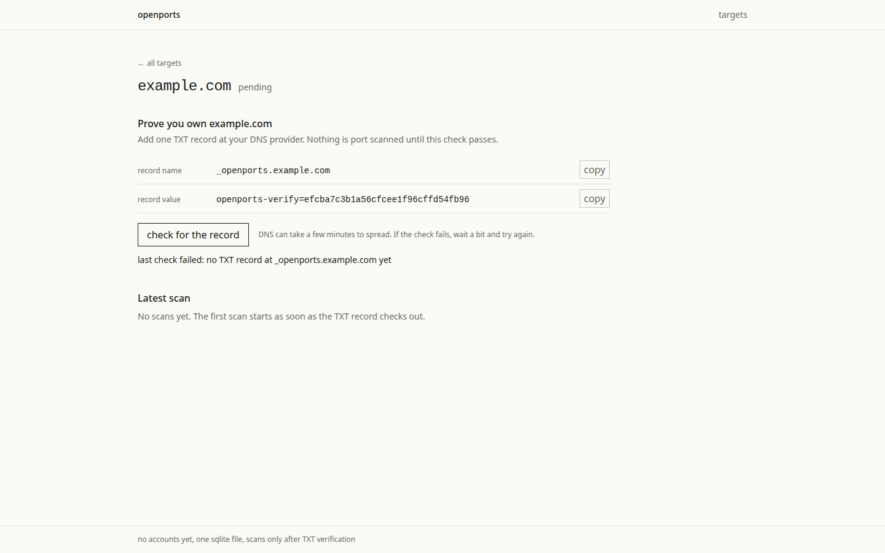
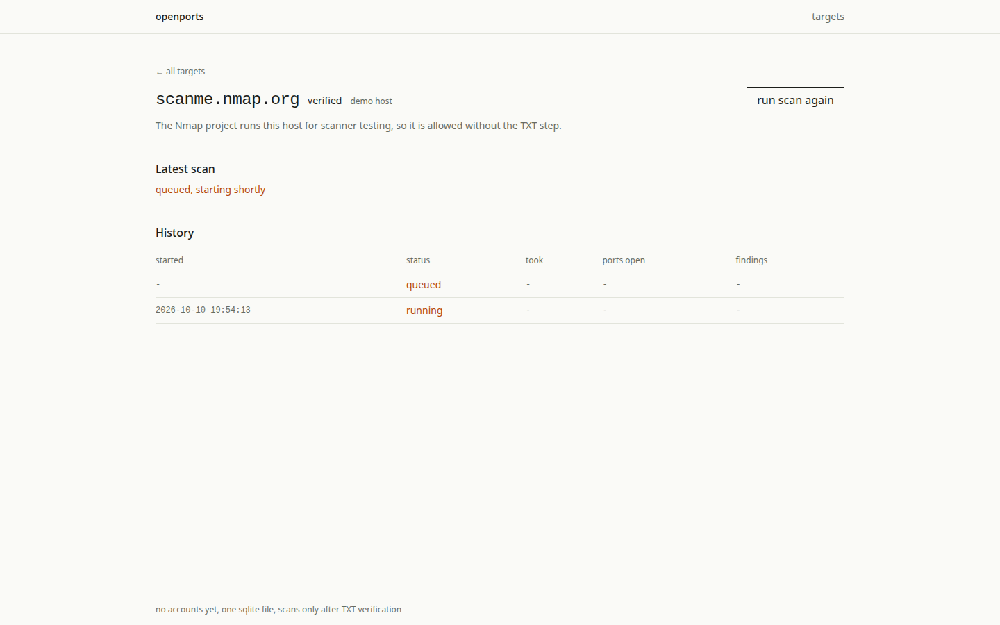
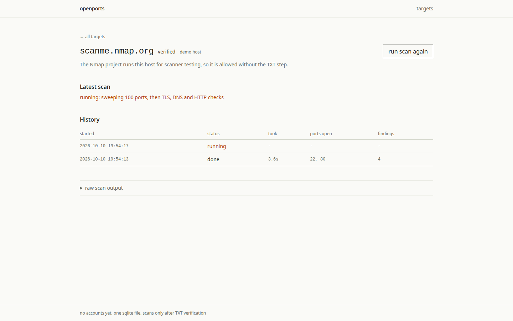
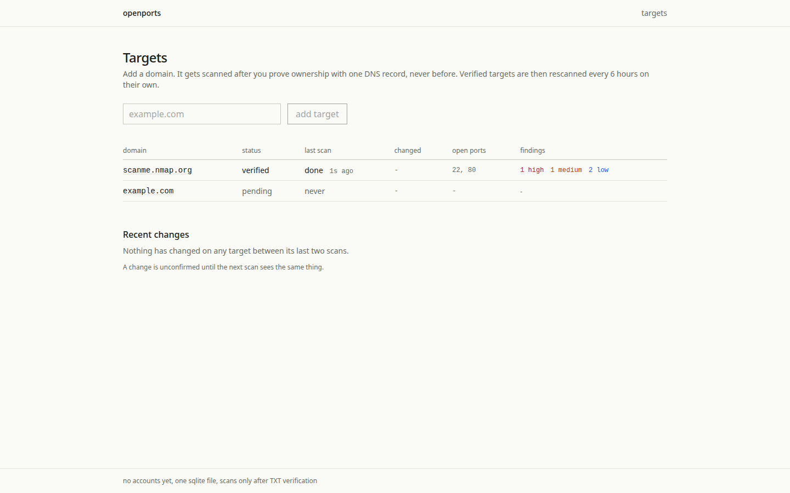
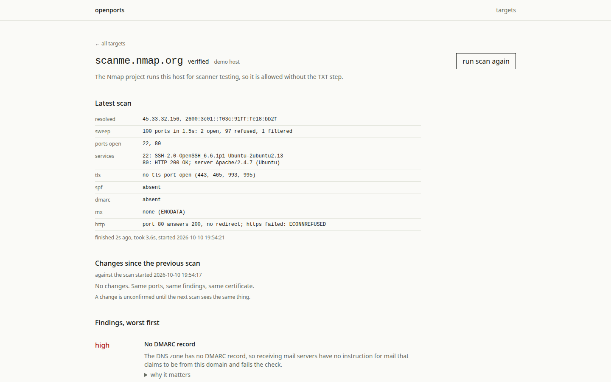
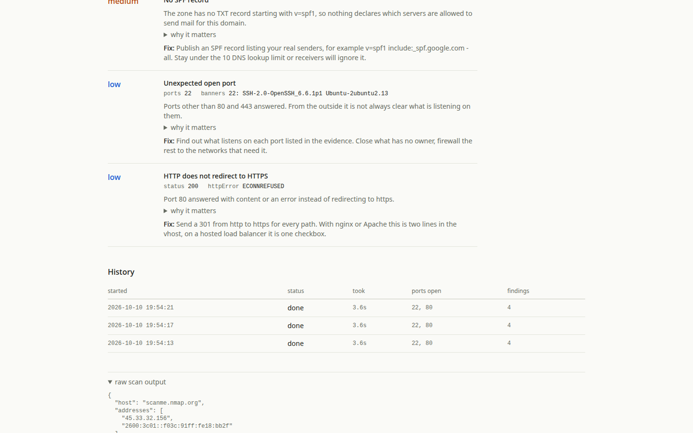
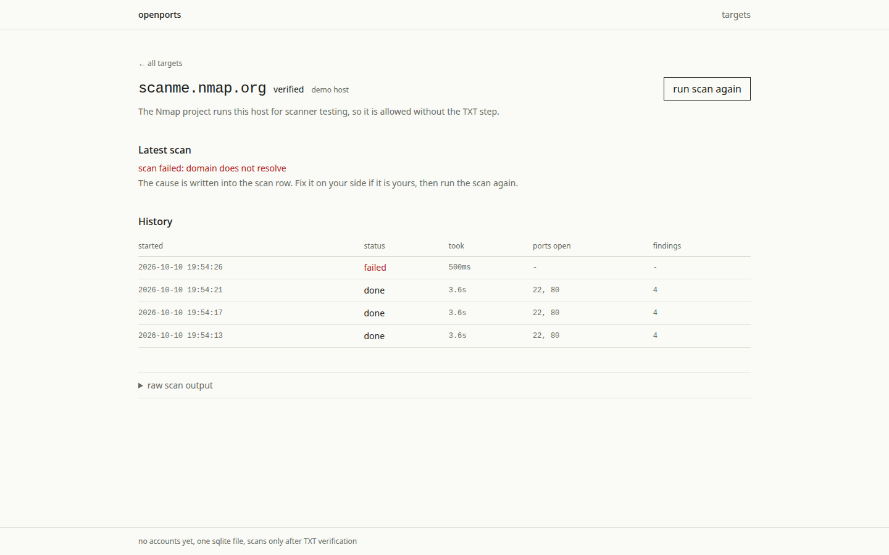

OpenPorts watches your domains from the outside and reports what they expose.
Open ports, TLS certificates on their way out, mail records that let anyone spoof you, headers that give away the stack. Add a domain, prove ownership with one DNS record, and see what the internet sees.
Try it
live demo: the real app, running against scanme.nmap.org, the host the Nmap project runs for scanner testing. Press run scan again and a fresh scan finishes in about four seconds.
The live demo runs on a home machine behind a tunnel, so it is only up when that machine is. Everything on this page, and the app itself, always works locally:
npm install npm run dev
Then open http://localhost:4310. Tests: npm test, 56 passing.
What a scan gets you












How it works
- Ownership gate: publish one TXT record at _openports.<domain> and the scanner runs. The worker rechecks verification before touching the network, so there is no bypass path. The single exception is scanme.nmap.org, which the Nmap project runs for scanner testing.
- Modest probe budget: one TCP connect sweep over the 100 most common ports, a greeting listen, one http GET if a port stays quiet, certificate reads on the TLS ports. Nothing else is ever sent.
- Diffs with hysteresis: changes show up immediately, tagged unconfirmed, and turn confirmed once two of the last three scans agree.
- Six hour cadence, a worker pool of three behind one atomic claim, and the last 100 done scans kept per target. No redis, no docker, no queue service.
Limits, stated plainly
- No accounts, no auth. Run it locally or behind something that gates access.
- One SQLite file, one process. It is a tool for one company's own instance.
- The scan history is bounded at 100 done scans per target.